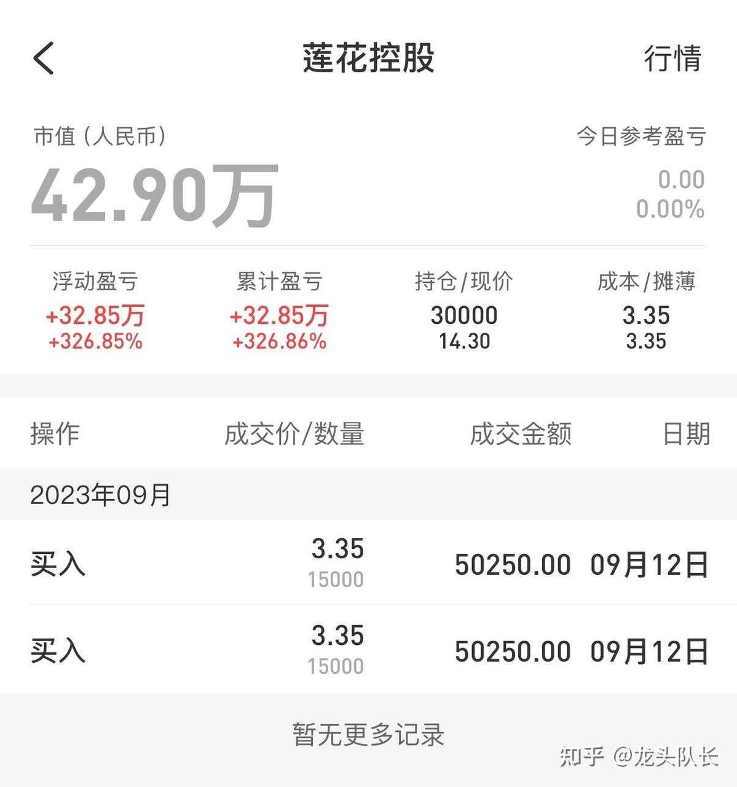
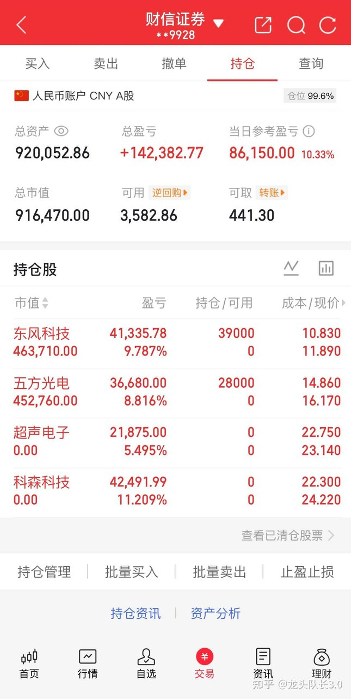

该作者的核心逻辑是典型的“短线游资博弈策略”，即通过捕捉市场情绪高涨期的‘主升浪’标的，利用高换手率和资金合力推动股价快速上涨。其逻辑传导链为：寻找具备特定题材（如AI封装、国企改革）的个股，在趋势启动点（突破关键压力位）重仓介入，利用市场跟风盘的涌入实现快速获利，并在破位或获利预期达成后迅速撤离。这种策略本质上是‘博弈存量资金的注意力’，而非价值投资，其高收益伴随着极高的回撤风险。
双版奉上，莲花控股3倍已撤！20W重新开始，目标剑指1000个，第23天，新入东风科技、五方光电，10月龙头已锁定，欢迎来验！（附10.8日机会）
大家好，我是队长，我又王者归来了！现百万已成，带着326cm的莲花控股从某音完美撤离，2026.10.3日正式入驻知乎。

展示了单只个股的极高收益率（326%），这通常是幸存者偏差的体现。对于新手而言，这种图表具有极强的心理诱导性，容易让人产生‘我也能通过单只票翻倍’的错觉，从而忽视了背后极高的仓位风险和选股难度。
直接说接下来的目标：20万本金，明年国庆前干到1000万。全程实盘公开，交割单每日贴，绝不马后炮。
两个月前，我用5万做到了100万。老粉都知道我的风格：只做波段主升浪注【本质逻辑】指股价在短期内因题材催化或主力资金强力介入，脱离底部区域进入快速拉升阶段。这是游资最喜欢的行情，因为波动大、赚钱效应强。【新手提示】新手极易在主升浪末端追高被套，切记‘不追高、不碰高位股’，主升浪往往伴随巨大的获利盘抛压。，不碰杂毛跟风票注【本质逻辑】指在板块行情中，缺乏核心技术壁垒或实质性业绩支撑，仅靠蹭热点上涨的个股。一旦板块退潮，这类股票跌幅最深。【新手提示】新手应专注板块龙头，远离跟风票，因为当龙头回调时，跟风票往往会率先崩盘。，趋势启动点介入，破线即走注【本质逻辑】指当股价跌破预设的支撑线（如均线或前低）时，无条件卖出。这是短线交易的‘保命符’，通过牺牲小额亏损来规避深套风险。【新手提示】新手最难克服的是‘亏损时舍不得卖’，必须建立严格的止损纪律，否则一次深套可能抹平之前所有盈利。，绝不留恋。
之前平台限制太多，很多核心买点和止损位没法细说。现在来知乎，所有逻辑讲透，所有买卖点晒全，毫无保留。
熟悉我的朋友应该知道，去年我曾在其他平台持续公开过一段时间的实盘记录，期间也积累了一些朋友的关注。当时设定的阶段性目标，每一步操作都提前做了分享，很庆幸在这个过程中，能帮到一些信任我的朋友。
过往的记录都在原平台可查，真假自辨，无须多言。今天选择在知乎新开一个账号，初心很简单——希望延续这份真诚的分享，让更多有缘的朋友能从中获得一些参考。新朋友不妨先观察一段时间，时间会给出答案。
这段时间陆续收到一些朋友的私信，经过认真考虑，我决定正式入驻知乎，重新开始实盘分享。回想自己从普通散户一路走来的经历，深知独自摸索的不易，也体会过回撤时的煎熬。
正因为我曾经走过那些弯路，所以更想在能力范围内，给还在摸索中的朋友提供一些思路和参考。谈不上指点，更多的是相互陪伴、共同成长。
接下来，我会在每个交易日早上9:40左右分享几只当天关注的标的，盘后也会聊聊每一只背后的逻辑思路。不求所有人都认同，只求对得起自己的记录，对得起信任我的朋友。
前路漫漫，愿意一起同行的朋友，都可以点个赞、关个注，咱们一起抓龙头、吃复利，杀出一条交易逆袭的路！能帮一个是一个，随缘尽力。接下来，就让我们一起携手，一起见证这场从20万迈向1000万的奇迹之旅！
先看看今天实盘情况：
新进：东风科技、五方光电
出：超声电子、科森科技（止盈落袋）

显示了高仓位运作（99.6%仓位），这在短线交易中属于‘梭哈’行为。虽然短期盈利亮眼，但这种操作在市场突发利空时几乎没有回旋余地。新手切勿模仿这种高杠杆或满仓操作，因为一旦判断失误，账户净值将面临毁灭性打击。
10月8日关注方向参考：
五方光电：AI芯片驱动玻璃基板技术革命，TGV封装需求爆发。公司精密光学镀膜能力可复用至半导体先进封装领域，切入高壁垒赛道，若客户验证突破，估值体系有望从消费电子切换至半导体。
东风科技：主动出清亏损业务后，利润结构显著优化。线控悬架与新能源驱动电机进入量产阶段，毛利率持续改善，营收缩量而利润倍增的态势若延续，盈利质量将获得市场重估。
襄阳轴承：汽车轴承细分龙头，新能源车渗透率提升带动需求。股东户数下降筹码集中注【本质逻辑】指股东户数减少，意味着散户离场、主力吸筹，后续拉升阻力较小。【新手提示】筹码集中只是上涨的必要非充分条件，主力吸筹后可能长时间横盘震荡，不要仅凭此指标就盲目全仓买入。，国企改革预期加持，困境反转弹性可观。
九阳股份：小家电龙头品牌力强，太空科技系列持续创新。行业需求触底，降本增效成果显现，消费复苏叠加以旧换新政策，弹性可期。
恒丰纸业：HNB政策窗口临近，烟标第二曲线蓄势待发。加热不燃烧烟草配套用纸全系列能力稀缺，国标落地将打开百亿级市场，低估值叠加新业务催化，向上空间充足。
最后与愿意同行的朋友说几句心里话
开始记录实盘的初衷，其实很简单——想亲自验证一件事：小资金是否真的能通过持续学习和纪律性的执行，慢慢走出一条属于自己的路。这个过程里，没有太多宏大的叙事，更多的是日复一日的坚持和反思。
交易中，回撤、踏空、卖飞都是再正常不过的事，没有人能永远踩准节奏。我能做的，是把每一笔操作、每一次判断——无论对错，无论纠结与否——都真实地记录下来。不包装，也不回避。
无论你是已经在市场中摸索了一些年头、但尚未形成自己节奏的朋友，还是刚入市不久、还处于学习阶段的新手，又或者是单纯想找个地方一起复盘交流，都欢迎在这里驻足。这里没有捷径，也没有“秘籍”，只有一份真实的记录和交易思路的分享。如果能在某个瞬间给你带来一点启发，那就很值得了。
如果觉得这种方式对你有帮助，都可以点个赞、关个注，咱们一起抓龙头、吃复利，杀出一条交易逆袭的路！
若点赞数超过50，节后开盘前我会整理一份当日的关注方向，作为给首批支持的朋友们的一点回馈。投资的路很长，希望我们都能在起伏中保持平和，在学习中慢慢进步。
免责声明：以上内容仅为个人交易记录和思考，不构成投资建议，也不作为买卖依据。市场充满不确定性，每一次决策都请结合自身情况独立判断，盈亏自负。
全文逻辑总结：作者采用的是高风险、高收益的短线博弈策略，核心在于‘快进快出’与‘严格止损’。新手防踩雷法则：1. 警惕‘翻倍神话’，任何实盘记录都可能存在幸存者偏差；2. 严禁模仿满仓操作，短线交易必须控制仓位；3. 区分‘逻辑’与‘情绪’，作者提到的题材（如玻璃基板）仅是炒作借口，真正的核心是资金合力，不要因为看懂了题材就盲目买入，要看资金是否在持续流入。